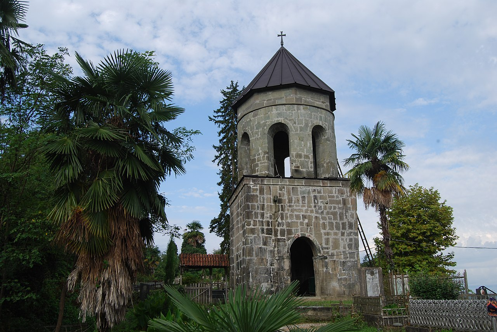
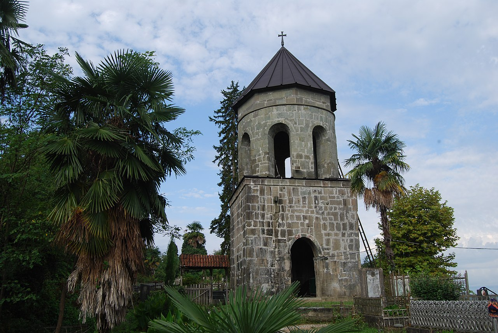

Shemokmedi Church
About Shemokmedi Church
The Shemokmedi monastery is a Georgian Orthodox monastery located at the village of Shemokmedi in Georgia's southwestern region of Guria. Founded in the 15th century, the Shemokmedi monastery functioned as a seat of a bishopric and burial ground of the Gurieli princely dynasty. It was a safe-house of church treasures and, over the centuries, had accumulated an extensive collection of various objects from other Georgian monasteries. Parts of the collection, which survived the 19th-century robbers, are now on display in Georgia's museums.
Architecture
The Shemokmedi monastery consists of two architecturally simple churches—those of the Redeemer and the Transfiguration otherwise known as Zarzma.
The third structure, a bell tower, is built upon the fence of the monastery.
This complex is located on a small hill on the left bank of the Bzhuzhi river, overlooking the village of Shemokmedi.
The church of the Redeemer is a three-nave basilica with the dimensions of 10 × 13 m.
It is an ashlar structure, lined with bluestone, and with a white marble floor.
An ornate curving follows the contour of a window on the western façade.
The interior was once entirely frescoed.
The surviving fragments depict Mamia II Gurieli (died 1627), Prince of Guria, and his wife Tinatin, with respective identifying inscriptions in Georgian.
The church of the Transfiguration was constructed at the behest of Prince Vakhtang I Gurieli in the late 1570s to house the venerated 9th-century Icon of the Transfiguration of Jesus rescued from the Zarzma Monastery in the Ottoman-occupied Principality of Samtskhe;
hence comes the other name of the church, "Zarzma".
This church is smaller than that of the Redeemer, with the dimensions of 9 × 7 m.
It is a single-nave design crowned with an octagonal dome. The edifice is lined with brick and ashlar.
Fragments of Georgian and Greek inscriptions as well as fresco depiction of the first bishop of Shemokmedi, Besarion Machutadze, survive on walls.
A bell-tower built upon the church fence was originally constructed in the 16th century and renovated in 1831.
All structures of the complex bare traces of multiple reconstructions.
Northeast of the Shemokmedi monastery, at a distance of some 1.5 km, on the right bank of the Bzhuzhi, is the recently restored Gorisperdi church.
Ornate fragments from the earlier, ruined medieval structure are found in the churchyard.
History
The Shemokmedi Monastery was founded in the 15th century as a seat of one of the three bishoprics of the Principality of Guria, the other two being Jumati and Khino.
Local prelates bore the rank of archbishop or metropolitan bishop and the epithet of Shemokmedeli.
At the same time, the monastery served as a burial ground to the Gurieli princely dynasty.
The surviving tombs belong to Rostom Gurieli (died 1564) and Mamia III Gurieli (died 1714).
After the death of Metropolitan Bishop Ioseb Takaishvili in 1794, the Shemokmedi sea became dormant;
the bishop of Jumati became a titular Shemokmedeli, while the monastery and its possessions passed to Kaikhosro Gurieli,
an influential member of the ruling dynasty of Guria, who eventually lost his estates for leading an insurrection against the Russian Empire in 1820.
During the conflict, Shemokmedi was stormed by the Russian troops, its fortifications were demolished and environs devastated.
The Shemokmedi monastery was reinstated as a bishopric see, uniting the parishes of Batumi and Shemokmedi, in 1920.
The Shemokmedi Diocese was as a separate eparchy was reestablished in 1995.
Currently, its jurisdiction extends to all Orthodox churches in all three municipalities of Guria—Ozurgeti, Lanchkhuti, and Chokhatauri.
The incumbent Catholicos Patriarch of Georgia Ilia II served as Bishop of Shemokmedi from 1963 to 1967.
Map
QUESTIONS
+ ASK A QUESTION

Write review and rate destination
Help other travelers use your experience.
Review this destination, share your thoughts, impressions, pros and cons.
Let's make traveling easier than ever.